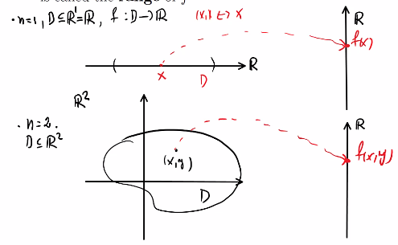
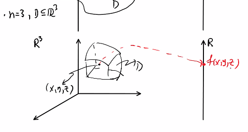

Functions of Serveral Varibale

Remark:
- D is a subset to (can be whole sete of )
- represents mapping into a real number
- represents any point in D
Examples of
- and


Remark:
- domain and range are two differnt creature
- domian can be interval, 2D space, 3D space, etc.
- range of is a single real number
Examples
- Example 1

Solution:
Think, for what's kind of coordinate of x and y need so that is a real number

To describe is the region above the line (exclude the point on the line)

Graphs of Function of Two Variables

Analogy of using level curves
- consider a topography map
- surface as surface of mountain
- take some elevation
- cut the surface of the mountain by horizontal plane
- the cut result will be a curve that connects all point on the same elevation
Remark:
- is a collection of points in
Example of a level curves
Example of contour map located on -plane (family of level curves)

Examples
Example 2
Level Surfaces